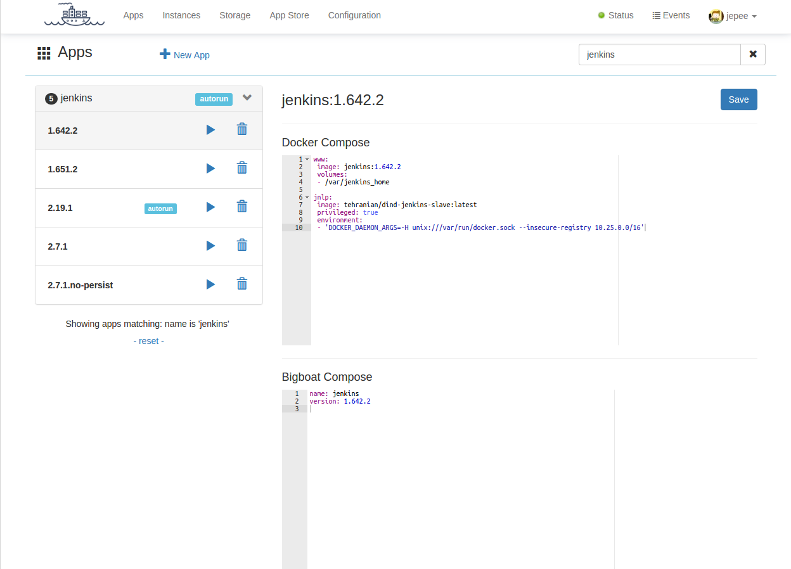

Apps
Application definitions in BigBoat describe the different parts of your application and how they fit together. The application definition consists of two parts - a Docker Compose part and a BigBoat Compose part.

Docker compose
The Docker Compose part of the application definition is for all engineering purposes what it says in the tin - a Docker Compose (version 1) file. However, not all Docker Compose features are allowed/supported and some work slightly differently than Docker Compose ran directly. There are also additional features, that BigBoat provides, that have no Docker Compose counterparts.
Example Docker Compose:
www:
image: jenkins:2.7.1-alpine
volumes:
- /var/jenkins_home:/var/jenkins_home
environment:
- "JAVA_OPTS=-Duser.timezone=Europe/Amsterdam"
mem_limit: 4g
stop_signal: SIGKILL
BigBoat compose
All BigBoat specific configuration resides here. The BigBoat Compose consists of application level properties and service level properties.
The application level properties are:
- name - the name of the application
- version - the version of the application
- tags - list of application tags
The service level properties can be specified for each service in the Docker Compose and can be:
- enable_ssh - DEPRECATED, please use ssh. Enables SSH connectivity to the container implementing this service
- ssh - enables SSH connectivity to the container implementing this service. The value of this option is an object with the following attributes:
- shell - (path to) the shell binary in the container; optional, defaults to bash. Set this attribute if for example there is no bash in the target container, i.e. in alpine-based containers.
- users - login credentials; optional, defaults to empty list (no authentication is enforced). The users are specified as a YAML object where the keys are usernames and the values - passwords. For example:
This option has a shortcut form:serviceName: ssh: shell: /bin/sh users: myself: secret-pass someone: 123456
that provides unauthenticated root access using bash as a shell.serviceName: ssh: true
- endpoint - the service endpoint; has the format of :port/path and will be used by BigBoat to provide a more meaningful link to your service
- protocol - the service protocol; example http,https,tcp,udp.
type - the type of the service; possible values are service and oneoff; defaults to service. When set to oneoff BigBoat will not try to restart the service if it exits. The instance will enter failing state if the service exits with code other than 0. If the type of the service is service (the default value) BigBoat will keep trying to restart the service container, exponentially backing away. The oneoff services are meant as a way to initialize/bootstrap other services in the application.
Example BigBoat Compose adding SSH connectivity to the www service:
name: jenkins version: 2.7.1 www: ssh: true endpoint: :8080/startScreen protocol: https